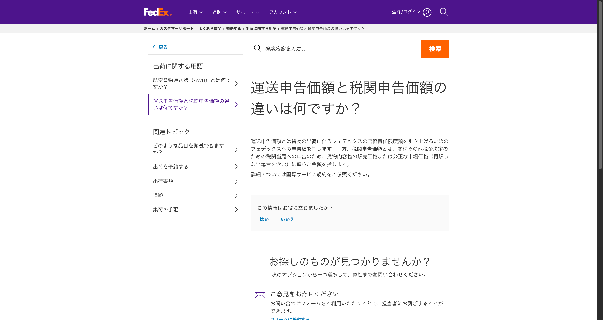
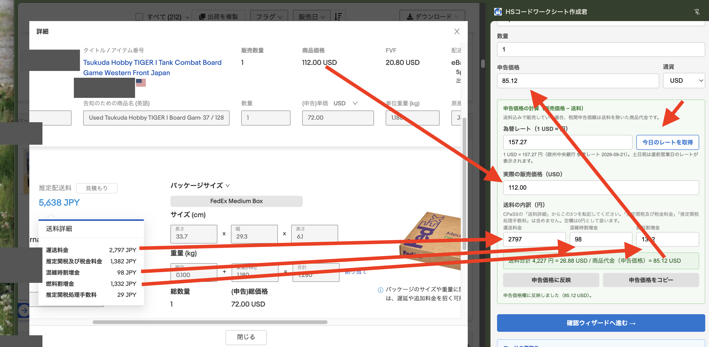

eBayの輸出では、販売価格に送料を含めて出品するのが一般的です。そのため「販売価格＝税関に申告する金額」だと考えてしまいがちですが、じつは違います。 税関に申告する「税関申告価額」は、送料を抜いた商品そのものの代金です。この記事では、公式資料を根拠に、その理由と計算のやり方を整理します。
この記事でわかること
- 「運送申告価額」と「税関申告価額」はまったく別のものであること
- 販売価格の中身は「商品代・送料・関税」の3つに分かれていて、申告するのは商品代の部分だけであること
- 米国税関（CBP）の公式資料が示す、送料を申告価格から除いてよい根拠
- 拡張機能「HSコードワークシート作成君」で申告価格を自動計算する手順
第1章 「運送申告価額」と「税関申告価額」は別物
発送伝票やCPaSSの画面には「申告価額」という言葉が何カ所か出てきますが、実は意味の違う2種類の「申告価額」が混在しています。 FedEx Japanの公式FAQ「運送申告価額と税関申告価額の違いは何ですか？」には、次のように説明されています。

出典：FedEx Japan「運送申告価額と税関申告価額の違いは何ですか？」
| 運送申告価額 | 荷物の出荷にともなう、FedExの賠償責任限度額を引き上げるためにFedExへ申告する金額。荷物が壊れた・紛失したときの補償の上限に関わるもの。 |
|---|---|
| 税関申告価額 | 関税など税金を決めるために税関当局へ申告する金額。貨物内容物の販売価格、または（再販しない場合を含めた）公正な市場価格に準じた金額。 |
この記事で扱うのは、後者の「税関申告価額」です。
第2章 販売価格の中身は3つ（商品代・送料・関税）
eBayでは送料を販売価格に含めて出品するのが基本です。つまり、バイヤーが支払う金額（販売価格）の中には、商品代だけでなく送料や関税の分も含まれています。 だから「販売価格＝申告価格」ではありません。
このうち、税関に申告する「税関申告価額」に当たるのは商品代（65ドル）の部分だけです。
送料（グレー）と関税（オレンジ）は、税関申告価額には含めません。
第3章 根拠（公式の原文）
アメリカ向けの場合、税関申告価額（transaction value／課税価格）の考え方は、米国税関・国境警備局（CBP）の公式資料「Proper Deductions Of Freight And Other Costs From Customs Value」に定められています。原文は次のとおりです。
"...the total payment (whether direct or indirect, and exclusive of any costs, charges, or expenses incurred for transportation, insurance, and related services incident to the international shipment of the merchandise from the country of exportation to the place of importation in the United States) made, or to be made, for imported merchandise by the buyer to, or for the benefit of, the seller."
要約：米国の課税価格（transaction value）は、買い手が売り手に支払う代金の総額から、輸出国からアメリカの輸入地までの国際輸送・保険・関連サービスにかかった費用を除いたものです。
出典：U.S. Customs and Border Protection「Proper Deductions Of Freight And Other Costs From Customs Value」
https://www.cbp.gov/sites/default/files/assets/documents/2016-Apr/icp049_3.pdf
つまり、税関に申告するべき金額は「商品そのものの代金」であって、そこに国際輸送にかかった送料を混ぜてはいけない、ということです。 第1章で見たFedExの「税関申告価額＝販売価格に準じた金額」という定義も、根本的には同じ考え方に基づいています。
第4章 送料を抜くとバイヤーにもセラーにもメリット
申告価格から送料を除くことは、単に「ルールだから」というだけでなく、バイヤー側の負担を減らすことにもつながります。以下はいずれも説明のための参考例です。
アメリカ向けの場合
仮に送料が20ドル、関税率12%、為替レートが1ドル150円だとすると、送料の分にかかっていたはずの関税は次のように計算できます。
送料を申告価格から抜くことで、この360円分の関税がかからなくなります。実際には関税額に連動する手数料（処理手数料など）も一緒に減るため、負担の軽減額はもう少し大きくなる見込みです。
アメリカ以外の国のバイヤーの場合
高額な商品ほど、送料分まで含めた金額に対して関税やVAT（付加価値税）がかかっていた分が解消されます。国によって関税・VATの計算方法は違いますが、「申告価額に送料を混ぜない」ことが出発点になります。
ただし、EU（ヨーロッパ連合）・イギリス向けは注意が必要です。EU関税法典（UCC）第71条（1）（e）は、輸入品の価格に含まれていない場合、EU域内への輸送・保険・積み込み費用を課税価格（customs value）に別途加算する、と定めています。 つまりEU・イギリスでは、税関側が輸送費用を課税価格に加算する仕組みになっているため、商品代金に送料まで混ぜて申告すると、送料の分が二重に課税されるおそれがあります。
第5章 HSコードワークシート作成君での計算手順（v1.9.1）
拡張機能「HSコードワークシート作成君」のパネルには「申告価格の計算（販売価格 − 送料）」という機能があります。次の手順で、税関申告価額を自動計算できます。
- 「今日のレートを取得」を押す（欧州中央銀行の参考レートを取得します。手入力もできます）
- 「実際の販売価格（USD）」を入力する
- CPaSSの「送料詳細」から「運送料金」「混雑時割増金」「燃料割増金」の3つを円で転記する（「推定関税及び税金料金」「推定関税処理手数料」は含めません。項目が空欄の場合は0円として入力します）
- 「申告価格に反映」を押す
- 「申告価格をコピー」を押し、CPaSSの「（申告）単価」欄に貼り付ける
（小数点以下2桁で四捨五入）
数値例（実際の画面の一例です。金額は参考例としてご覧ください）
送料の内訳：運送料金 2,797円＋混雑時割増金 98円＋燃料割増金 1,332円 ＝ 4,227円
→ 送料 4,227円 ÷ 157.27 ＝ 26.88ドル
→ 申告価格 112.00 − 26.88 ＝ 85.12ドル

拡張機能の案内：https://naokijodan.github.io/bulk-tools-guide/extensions.html
第6章 注意点
- 同梱（複数商品を1箱にまとめて発送）の場合：送料を商品数で按分してから、それぞれの商品代から引きます。1商品分の送料だけをまるごと1商品から引かないようにします。
- 過少申告に注意：送料を引きすぎて、実際の商品代金より低い金額を申告するのは過少申告になります。申告価格が実際の商品代金を下回らないようにします。
- 引くのは実際にかかった運送費のみ：CPaSSの「推定関税及び税金料金」「推定関税処理手数料」は運送費ではないため、申告価格の計算からは引きません。
- 運送申告価額（補償用）とは別欄：第1章で見た「運送申告価額」（FedExへの賠償責任限度額の申告）と、この記事で扱う「税関申告価額」は別の欄・別の目的です。混同しないようにします。
まとめ
- 「運送申告価額」（FedExへの補償申告）と「税関申告価額」（税関への課税申告）はまったく別のものです。
- eBayの販売価格には商品代・送料・関税が含まれており、税関に申告するのは商品代の部分だけです。
- 米国CBPの公式資料も、国際輸送にかかった費用を課税価格から除くとしています。EU・イギリス向けは税関側で送料が別途加算される仕組みがあるため、なおさら送料を混ぜないことが大切です。
- HSコードワークシート作成君を使えば、販売価格と送料の内訳から申告価格を自動計算できます。
あわせて読みたい：eBayの「最安値」とシッピングポリシーの考え方